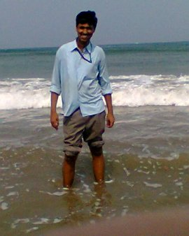
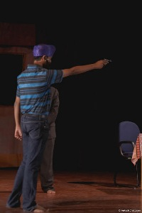

I was born on the first of May, 1997 at Ghatal in West Bengal. Having born in a middle class family ,I had a free and enjoyable childhood with my
parents and obviously friends. Little study and a lot of play fill the valuable memories of my early life. Truly speaking, I can never forget those golden days.
My friends,who are always beside me have helped me a lot through thick
and thin.Keeping in touch with all of them is a tough task but I do try it.My life,like the others',has definitely not been a bed
of roses.I have been through many highs and lows ,thick and thin.In secondary exmination I ended up securing the last position in the school.
But our Headmaster Arijit Maharaj taught me the moto of life- "Arise, Awake and stop not still the goal is reached".
These words of Swami Vivekananda made me what and where I am now.
The experiences I have gathered
will help me avoid making the same mistakes further.
 I started my school life at Ramakrishna Mission Vidyalaya, Narendrapur in Kolkata. Here, I had to lead residential life. In this golden period of my life I met some true friends who truly made my life, Some awesome teachers who not only made me excellent in academic but also taught me the lessons of life. After a failure in Secondary examination of the board, I changed myself to a great extent with the cordial help from our Headmaster Arijit Maharaj. My main academic achievements are as follows-
Apart from academics I excell myself in sports and Dramatics.I am a good swimmer and a dependable defender in football. I am a active member of Bengali Dramatic society, IIT KHARAGPUR and participated in the general Championship event, Bong Drams. Apart from this I love coding and web development. I was selected in the web development team of Branding and Relation Cell, IIT Kharagpur.
I love reading story books and watching movies. Apart from these my favourite pass time is playing chess and mobile games (to be specific, Mini Militia).
I am that young blogger who loves to make pun of ethics and cultures of our Indian Society and criticizes the so-called democratic system.
You can read my blogging contents by clicking here
These are all that interest me,and if I find anything new ,I'll be sure to add them here.